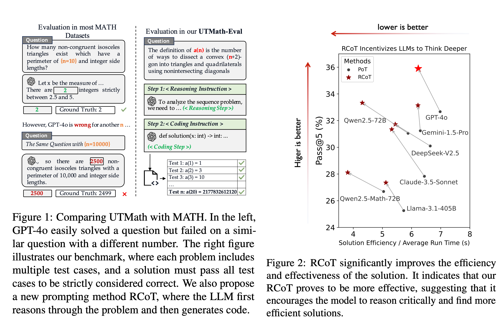
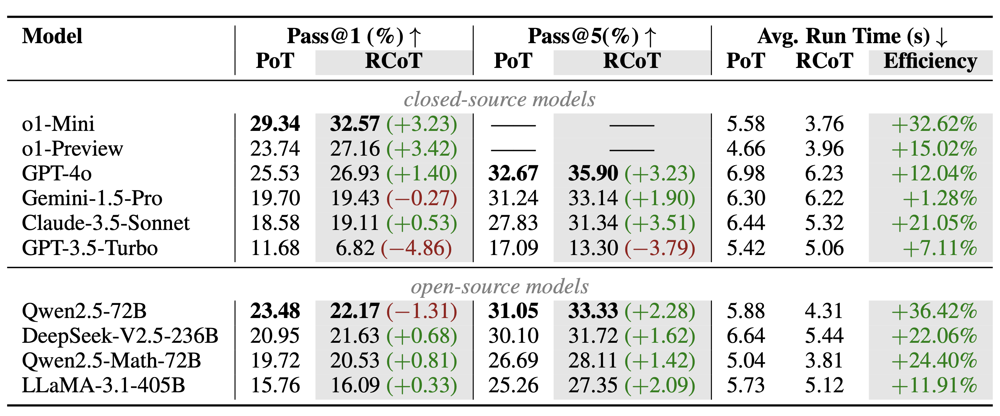
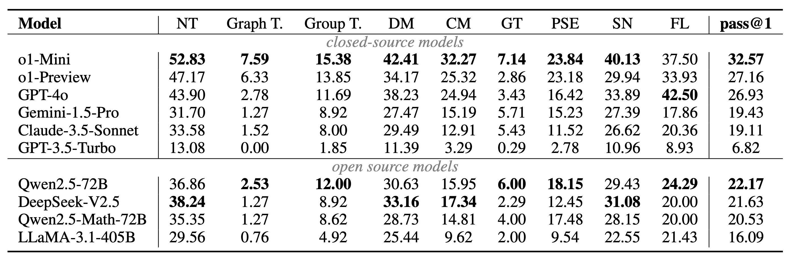
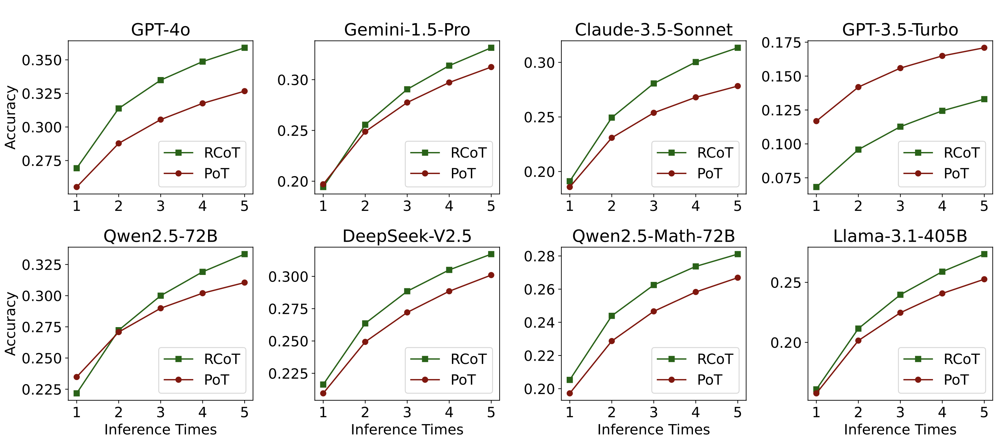
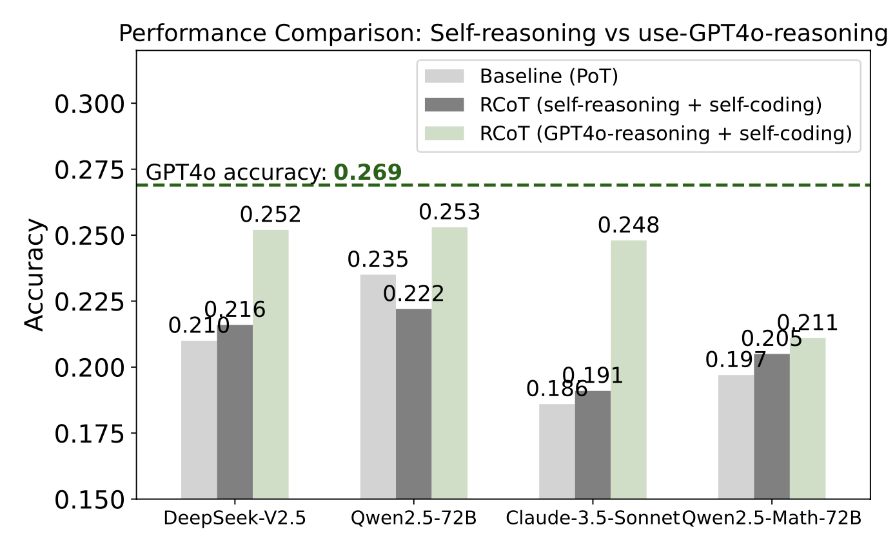

UTMath is a rigorous and expansive benchmark designed to evaluate the mathematical reasoning abilities of Large Language Models (LLMs), with an average of 68 test cases per problem to ensure that the model **truly solves the problem** rather than simply memorizing the answers. Based on sequences and inspired by the Online Encyclopedia of Integer Sequences ([OEIS](https://oeis.org/wiki/Welcome)), UTMath encompasses a diverse set of 1,053 problems across 9 distinct mathematical domains. This provides a comprehensive assessment of LLMs' capabilities. Drawing from unit testing methodologies in software development, UTMath’s innovative framework enables a detailed analysis of how well LLMs adapt and reason across a broad range of mathematical topics.
The Reasoning-to-Coding of Thoughts (RCoT) approach complements the UTMath Benchmark by encouraging LLMs to engage in explicit reasoning prior to generating code. This approach fosters the development of more sophisticated and logically coherent solutions, leading to improved overall performance in mathematical problem-solving.
[2024/11]🚀🚀🚀: We released our code📝
[2024/11]: We released our benchmark UTMath.
If you find our work interesting and meaningful, welcome to give a 🌟 to our repo and cite our paper.
@misc{yang2024utmathmathevaluationunit,
title={UTMath: Math Evaluation with Unit Test via Reasoning-to-Coding Thoughts},
author={Bo Yang and Qingping Yang and Runtao Liu},
year={2024},
eprint={2411.07240},
archivePrefix={arXiv},
primaryClass={cs.CL},
url={https://arxiv.org/abs/2411.07240},
}The evaluation of mathematical reasoning capabilities is essential for advancing Artificial General Intelligence (AGI). While Large Language Models (LLMs) have shown impressive performance in solving mathematical problems, existing benchmarks such as GSM8K and MATH present limitations, including narrow problem definitions with specific numbers and reliance on predetermined rules that hinder accurate assessments of reasoning and adaptability. This paper introduces the UTMath Benchmark, which robustly evaluates the models through extensive unit tests. It consists of 1,053 problems across 9 mathematical domains, with over 68 test cases per problem. We propose an innovative evaluation framework inspired by unit testing in software development, focusing on both accuracy and reliability of results. Furthermore, we introduce the Reasoning-to-Coding of Thoughts (RCoT) approach, which encourages LLMs to perform explicit reasoning before generating code, leading to generating more advanced solution and improved performance. Furthermore, we are releasing not only the UTMath benchmark but also the UTMath-Train training dataset (more than 70k samples), to support the community in further exploring mathematical reasoning.

Here, we consider the closed-source models, i.e., GPT-3.5-Turbo/GPT-4o from OpenAI, Claude-3.5-Sonnet, Gemini-1.5-Pro, as well as the open-source models, i.e., LLaMA-3.1, Qwen2.5, Qwen2.5-Math, DeepSeek-V2.5. The metric pass@1 is calculated as the average result over 5 run times. We run all evaluations in a laptop with CPU Intel(R) Core(TM) i7-10750H CPU @ 2.60GHz.
We conducted a comprehensive study with 8 LLMs. Some of our key findings are summarized as follows:
- The best model, GPT-4o, only solves 26.93% problems in our benchmark, demonstrate the difficulty of our benchmarks.
- Modern LLMs perform poorly in Graph Theory, Group Theory, Geometry and Topology.

- With RCoT, 7 of 8 evaluated LLMs generated more efficient solutions, with most models achieving higher scores.
- RCoT can significantly improve the pass@k performance of LLMs.

- The quality of reasoning significantly impacts the accuracy and efficiency of the model's final solution.

We hope our findings contribute to a deeper understanding of current reasoning ability of LLMs and the further development of models.